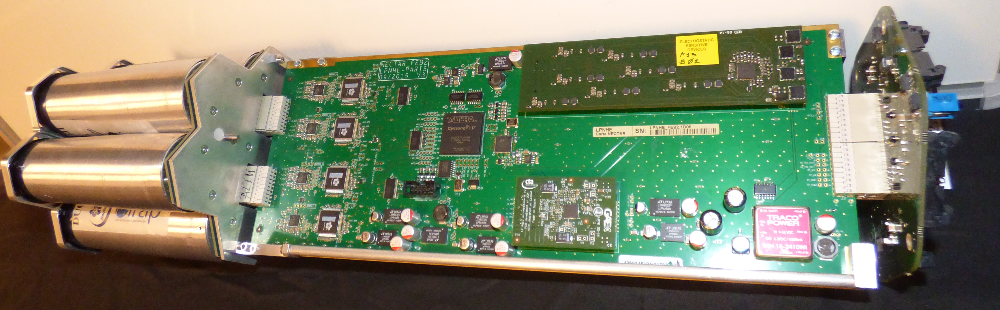

From prototype to production
of the NectarCam Front End Boards
The first prototypes
Debug and iterate
A couple of iterations was needed to reach the first fully functionnal Front End Board.
- My role was to debug each functionality, interacting with the electronics designers and the prototype software (C library + debugging GUI) designer.
- Each component (electronics and software) is tested separately by its designer but a lot of the testing and debugging happens only at the integration time.
- Progressively, the manual debug operations are scripted in Python to run more and more in-depth tests.
Ready for production
The test bench initially set up for debug and caracterisation becomes the automated production acceptance test
- The scripting is done entirely in Python.
- The control-command of the testbench instruments (Power Supply, Pulse generator, Attenuator) is done using sockets and SCPI commands
- For the data acquisition, the FebTest software is calling an executable written in C, using the libNectarCam which is the C library developped in the lab for the communication with the Front End Board.
- For the control-command of the Front End Board, the FebTest software is using a Opcua Client based of PyUAF, interacting with the qNectarCamOpcUaServer, both developped in the by the NectarCam collaboration for the slow control of the Front End Board and other elements of the camera.
- The TestAuto GUI is basic but robust and made with PyQt, including threads to keep the GUI responsive.
- The FebTest software documentation is automatically generated via Sphinx after each commit on CTA's SVN server using a TeamCity server for continous integration.

Production acceptance test
automated setup
on site
automated setup
on site
Credit: F.Toussenel

{kind=link}